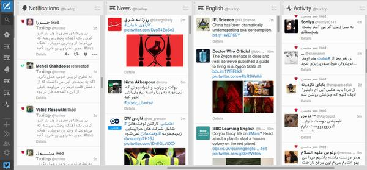
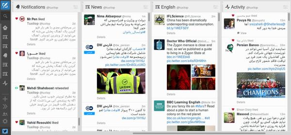

اسکریپت اصلاح نمایش راست به چپ توییتدک
اگر از کاربران توییتر باشید و تعداد افرادی که توییتهاشون رو دنبال میکنید زیاد باشند، احتمال داره که برای دستهبندی توییتها، توییتدک رو امتحان کرده باشید. توییتدک دنبال کردن لیستهای مختلف و همچنین هشتگها رو سادهتر میکنه و با نمایش چند ستون در کنار هم این امکان را فراهم میکنه که تعداد بیشتری از توییتها رو در یک صفحه جلوی چشم داشته باشید.
اما همینطور که در عکس میبینید، برخلاف صفحهی اصلی توییتر، توییتدک توییتهای فارسی رو هم از چپ به راست نمایش میده و این قضیه خوندن بعضی توییتها رو مشکل میکنه. برای حل این مشکل و تغییر دادن نحوه نمایش توییتهای فارسی توییتدک،با استفاده از جاوااسکریپت یک اسکریپت نوشتم که توییتهای فارسی رو پیدا کنه و اونها رو از راست به چپ نمایش بده. خوبی این روش اینه که فقط نمایش توییتهای فارسی تغییر میکنه و توییتهای انگلیسی تغییری نمیکنن.
نصب اسکریپت
به اسکریپتهای جاوااسکریپتی که به این شکل برای تغییر عملکرد صفحههای وب نوشته میشن user script میگن و برای نصبشون در هر مرورگر، باید از افزونهی خاص اون مرورگر استفاده کرد. بنابراین کافیه که مراحل زیر رو انجام بدین تا بتونید این اسکریپت رو نصب و ازش استفاده کنید.
۱- نصب افزونه تمپرمانکی برای مرورگر گوگل کروم و یا نصب افزونه گریزمانکی برای مرورگر فایرفاکس (پس از نصب باید فایرفاکس را بسته و دوباره باز کنید).
۲- مراجعه به صفحه اسکریپت اصلاح نمایش راست به چپ توییتدک در گیتهاب، کلیک بر روی دکمهی Raw و نصب اسکریپت.
نحوه کار
برای نوشتن اسکریپت از کتابخانهی JQuery و یکی از پلاگینهای اون به اسم livequery استفاده کردم. توضیح جیکوئری و کاربرد اون از حیطهی این پست خارجه اما پلاگین livequery به درد مواقعی میخوره که محتوای صفحه دائم در حال تغییره و بخشهای جدیدی به صفحه اضافه میشه. در مورد اسکریپت ما این پلاگین منتظر میمونه تا توییتهای جدید به صفحهی توییتدک اضافه بشن و بعد اونها رو به نحوی که مد نظر ماست تغییر میده.
در واقع ما با کمک جیکوئری و لایوکوئری منتظر توییتهای جدید میمونیم و بعد هر کدوم از اونها رو بررسی میکیم که ببینیم چه تعداد کاراکتر راست به چپ در اونها استفاده شده تا اگر لازم بود، توییت رو به صورت راست به چپ نمایش بده.
من در حال حاضر این اسکریپت رو چند ماه میشه که خودم امتحان کردم و بارها نحوهی عملکرد اون رو بهبود دادم تا توییتهای فارسی رو به خوبی تشخیص بده. در صورتی که شما هم از این اسکریپت استفاده کردید و نظر یا پیشنهادی برای بهبودش داشتید حتما برای من کامنت بذارید.

{kind=link}
{kind=link}
دیدگاهها
Comments powered by Disqus